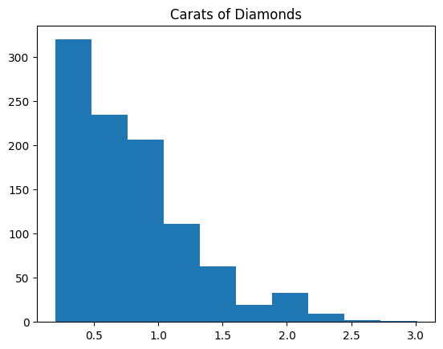

Statistical Thinking Foundations#
#these two lines will not change throughout the year
import pandas as pd
import matplotlib.pyplot as plt
url = "https://raw.githubusercontent.com/aoguedao/neural-computing-book/main/data/Diamond%20Prices%202022.csv"
diamonds_df=pd.read_csv(url)
#prints the first 5 rows of the dataframe
print(diamonds_df.head())
#prints the number of columns, attribute headers, data types, and the number of cells in each column (non-null values)
print(diamonds_df.info())
#prints the measures of central tendency for each numerical attribute
print(diamonds_df.describe())
#removes the rows that contain NULL values
diamonds_df = diamonds_df.dropna()
index carat cut color clarity depth table price x y z
0 66 0.28 Ideal G VVS2 61.4 56.0 553 4.19 4.22 2.58
1 127 0.91 Premium H SI1 61.4 56.0 2763 6.09 5.97 3.70
2 136 0.63 Premium E VVS1 60.9 60.0 2765 5.52 5.55 3.37
3 267 0.70 Premium F VS1 62.1 60.0 2792 5.71 5.65 3.53
4 324 1.04 Premium G I1 62.2 58.0 2801 6.46 6.41 4.00
<class 'pandas.core.frame.DataFrame'>
RangeIndex: 1000 entries, 0 to 999
Data columns (total 11 columns):
# Column Non-Null Count Dtype
--- ------ -------------- -----
0 index 1000 non-null int64
1 carat 1000 non-null float64
2 cut 1000 non-null object
3 color 1000 non-null object
4 clarity 1000 non-null object
5 depth 1000 non-null float64
6 table 1000 non-null float64
7 price 1000 non-null int64
8 x 1000 non-null float64
9 y 1000 non-null float64
10 z 1000 non-null float64
dtypes: float64(6), int64(2), object(3)
memory usage: 86.1+ KB
None
index carat depth table price \
count 1000.000000 1000.000000 1000.00000 1000.0000 1000.000000
mean 27027.194000 0.796700 61.75900 57.2640 3958.510000
std 15476.676775 0.476646 1.59089 2.1373 4056.572693
min 66.000000 0.200000 43.00000 50.0000 361.000000
25% 13241.500000 0.400000 61.10000 56.0000 966.000000
50% 27102.000000 0.700000 61.80000 57.0000 2279.500000
75% 40807.750000 1.030000 62.50000 59.0000 5202.750000
max 53916.000000 3.010000 68.60000 67.0000 18768.000000
x y z
count 1000.000000 1000.000000 1000.000000
mean 5.725390 5.728820 3.540080
std 1.121673 1.114177 0.696209
min 3.730000 3.680000 2.310000
25% 4.740000 4.750000 2.930000
50% 5.670000 5.680000 3.520000
75% 6.510000 6.502500 4.020000
max 9.360000 9.310000 6.160000
#pulls off the price column of the data frame
all_prices = diamonds_df['price']
#print(all_prices)
all_carats = diamonds_df['carat']
plt.hist(all_carats)
plt.title('Carats of Diamonds');
plt.show()

#scatter plot
plt.scatter(all_carats, all_prices)
plt.title("Diamond Carats and their Impact on Prices 2022")
plt.xlabel('Carats')
plt.ylabel('Prices')
plt.show()
#pie chart
all_cuts = diamonds_df['cut']
all_cuts.value_counts().plot(kind = 'pie')
plt.title("Diamond Cuts 2022")
plt.show()
#storing only the fair cut diamonds
fair = diamonds_df[diamonds_df['cut'] == 'Fair']
#storing only the good cut diamonds
good = diamonds_df[diamonds_df['cut'] == "Good"]
#storing only the ideal cut diamonds
ideal = diamonds_df[diamonds_df['cut'] == 'Ideal']
#storing only the premium cut diamonds
premium = diamonds_df[diamonds_df['cut']== 'Premium']
#storing only the very good cut diamonds
verygood = diamonds_df[diamonds_df['cut'] == 'Very Good']
#plotting the multi-variables on a scatter plot
plt.scatter(verygood['carat'], verygood['price'], edgecolor = "black")
plt.scatter(premium['carat'], premium['price'])
plt.scatter(ideal['carat'], ideal['price'])
plt.scatter(good['carat'], good['price'])
plt.scatter(fair['carat'], fair['price'])
plt.title('Diamond Prices 2022')
plt.show()